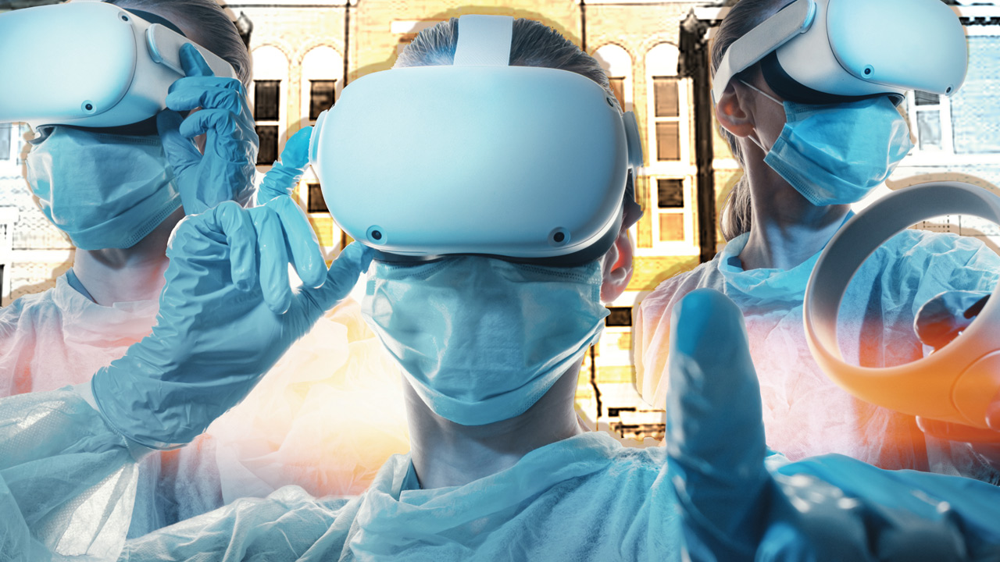

Projects
Project 1
During my junior year at the University of Missouri, I was on the MUVR team and we were working on the application of virtual reality/extended reality or VR/XR in the work place. Virtual reality to most people is just playing games or talking in a virtual chatroom but VR and XR have recently been developed to not only enable businesses to meet in virtual conferences; it now provides the ability to surgeons and doctors to practice close to real life simulations. We were also developing virtual meditation rooms for a more in-depth calming room to help students or workers, who need a space to relax and mentally revive themselves. I hope to take what I have learned from this project and apply it in a future endevor. More details here.
Image by [Blake Dinsdale]
Project 2
During my senior year at the University of Missouri, I developed a project portfolio that showcased my academic and professional accomplishments. This portfolio was a comprehensive collection of my work, including class projects, internships, and personal endeavors. Each project within the portfolio was curated to highlight my skills in various areas such as software/hardware development, data analysis, and web design. The portfolio demonstrated my technical abilities and showcased my growth and progression throughout my college journey. By organizing and presenting my projects in a cohesive and visually appealing manner, I effectively communicated my capabilities to potential employers and peers. This project portfolio was a valuable tool in showcasing my experiences and accomplishments during my time at the University of Missouri, preparing me for future career opportunities in the technology industry.

Image by [Curiosity Gym]
Project 3
Over the summer between my junior and senior years, I had the invaluable opportunity to intern at Clarios, a leading automotive battery manufacturer. During this internship, I gained hands-on experience in various aspects of information technology, ranging from systems administration to network security. I was involved in deploying and maintaining systems, troubleshooting technical issues, and collaborating with cross-functional teams to optimize IT infrastructure. This internship not only enhanced my technical skills but also provided me with valuable insights into the complexities of managing IT operations in a corporate environment. I developed a strong understanding of industry best practices and learned how to adapt to dynamic challenges within the field of IT. My time at Clarios was instrumental in shaping my career path and solidifying my passion for technology and innovation.

Image by [Clarios]